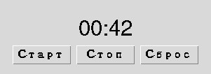

Глава 16 · Создаём классные приложения с Tkinter
Мини-проект: таймер обратного отсчёта
after() в деле: обратный отсчёт без единой блокирующей операции.
Таймер обратного отсчёта — образцовая демонстрация after() и
состояния приложения.
format_time.py
def format_time(sekundy):
minuty, ostatok = divmod(sekundy, 60)
return f"{minuty:02d}:{ostatok:02d}"
print(format_time(65)) # 01:05
print(format_time(600)) # 10:00
Три состояния таймера
STOPPED
running = False
after_id = None
Старт
↓RUNNING
running = True
after_id — активен
remaining достиг 0
↓FINISHED
running = False
after_id = None
remaining = 0
tajmer_gui.py
class TimerApp:
def __init__(self, root, start_seconds=60):
self.root = root
self.start_seconds = start_seconds
self.remaining = start_seconds
self.running = False
self.after_id = None
self.label_var = tk.StringVar(value=format_time(self.remaining))
ttk.Label(root, textvariable=self.label_var).pack()
ttk.Button(root, text="Старт", command=self.start).pack()
ttk.Button(root, text="Стоп", command=self.stop).pack()
ttk.Button(root, text="Сброс", command=self.reset).pack()
def start(self):
if self.running or self.remaining <= 0:
return # уже идёт, или уже FINISHED — сначала Сброс
self.running = True
self._schedule_tick()
def _schedule_tick(self):
self.after_id = self.root.after(1000, self.tick)
def tick(self):
self.remaining -= 1
self.label_var.set(format_time(self.remaining))
if self.remaining <= 0:
self.running = False
self.after_id = None # FINISHED — планировать больше нечего
return
self._schedule_tick()
def stop(self):
self.running = False
if self.after_id is not None:
self.root.after_cancel(self.after_id)
self.after_id = None
def reset(self):
self.stop()
self.remaining = self.start_seconds
self.label_var.set(format_time(self.remaining))after(1000, ...) — «примерно через секунду», не хронометр
after(1000, callback) означает «сделай callback готовым к выполнению примерно через 1000 мс, когда событийный цикл сможет его обработать» — не гарантию исполнения ровно в указанную миллисекунду. Если цикл в этот момент занят другим событием, вызов произойдёт чуть позже.Debug Lab 6: Таймер продолжает тикать после «Стоп»
tajmer_bez_proverki.py
def tick(self):
self.remaining -= 1
self.label_var.set(format_time(self.remaining))
self.after_id = self.root.after(1000, self.tick) # планирует себя ВСЕГДА
def stop(self):
self.running = False # состояние поменяли, но tick() его не проверяет# После нажатия «Стоп» таймер продолжает уменьшать remaining и тикать —
# флаг running изменился, но ничто не проверяет его внутри tick().stop() лишь меняет флаг running, но сам метод tick() не проверяет его перед тем, как запланировать себя заново — цепочка after() продолжает жить независимо от флага.
Исправленный код
tajmer_s_proverkoj.py
def tick(self):
if not self.running: # проверяем состояние ПЕРЕД тем как продолжить
return
self.remaining -= 1
self.label_var.set(format_time(self.remaining))
self.after_id = self.root.after(1000, self.tick)Практика: таймер обратного отсчёта